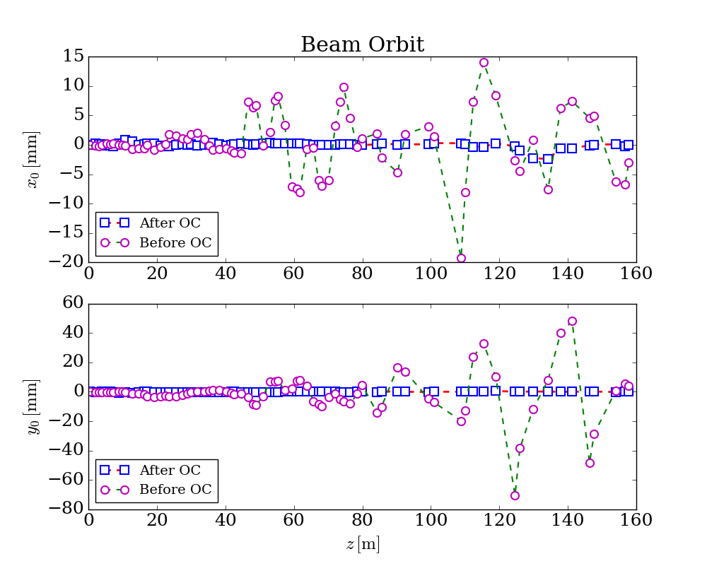

Getting started¶
This approach requires fewest input of code to complete the orbit correction optimization task, which also means you only has very few options to adjust to the optimization model. Hopefully, this approach could be used as an ordinary template to fulfill most of the orbit correction tasks. Below is the demo code:
import genopt
latfile = 'test_392.lat'
oc_ins = genopt.DakotaOC(lat_file=latfile)
oc_ins.simple_run(method='cg', mpi=True, np=4, iternum=20)
# get output
oc_ins.get_orbit(outfile='orbit.dat')
# plot
oc_ins.plot()
The lattice file used here could be found from
here, or from https://github.com/archman/genopt/blob/master/lattice/test_392.lat.
For this approach, the following default configuration is applied:
- Selected all BPMs and correctors (both horizontal and vertical types);
- Set the reference orbit with all BPMs’ readings of
x=0andy=0; - Set the objective function with the sum of all the square of orbit deviations w.r.t. reference orbit.
By default, conmin_frcg optimization method is used, possible options
for simple_run() could be:
- common options:
mpi: if True, run in parallel mode; if False, run in serial mode;np: number of cores to use ifmpiis True;echo: if False, will not generate output when optimizing, the same forrun();
- gradient descent, i.e.
method=cg: iternum: max iteration number, 20 by default;step: forward gradient step size, 1e-6 by default;
- gradient descent, i.e.
- pattern search, i.e.
method=ps: iternum: max iteration number, 20 by default;evalnum: max function evaulation number, 1000 by default;
- pattern search, i.e.
There are two options for DakotaOC maybe useful sometimes:
workdir: root directory for dakota input and output fileskeep: if keep working files, True or False
After run this script, beam orbit data could be saved into file, e.g.
orbit.dat:
which could be used to generate figures, the following figure is a typical one could be generated from the optimized results:
{kind=link}